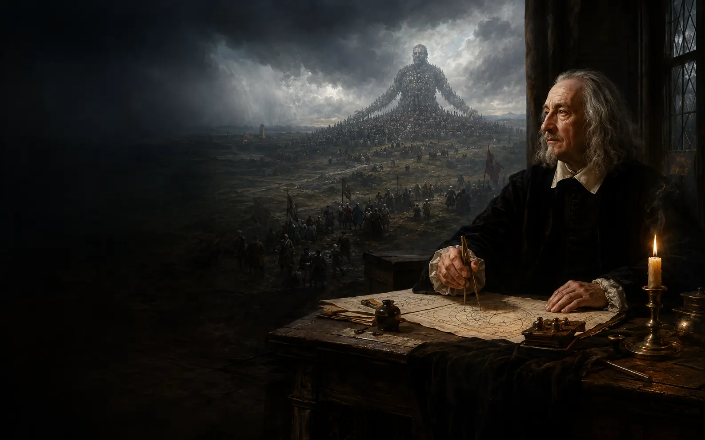

Filosofia politica moderna · Sicurezza e potere
La paura costruisce
lo Stato.
Quanta libertà possiamo consegnare allo Stato perché ci protegga, prima che la protezione diventi una nuova forma di paura?
Tocca i tre punti luminosi
Quattro ingressi
Non imparare una formula: ricostruisci perché uomini uguali e vulnerabili autorizzano un potere comune.
Scopro
Senza un potere comune, fiducia, promesse e cooperazione diventano fragili.
PercorsoStudio
Dodici tappe a due livelli, dalla guerra civile alla libertà dei sudditi.
TestiApprofondisco
Fonti primarie, ricostruzioni accademiche e questioni controverse restano distinte.
Biografia visualeA fumetti
Otto scene documentate: l’Armada, la guerra civile, Parigi, il Leviatano e la Restaurazione.
Scopro · Prima vivi il problema
Che cosa accade quando nessuno può garantire la pace?
Le scelte non assegnano un voto. Rendono visibile come vulnerabilità, incertezza e diffidenza trasformino anche persone ragionevoli in potenziali avversari.
Studio · Dodici tappe
Dalla paura reciproca alla costruzione del commonwealth
Spiegazioni chiare, esempi concreti e domande per entrare nel problema.
Il progresso resta sul dispositivo. Serve a ritrovare il filo, non a misurare il tuo valore.
Laboratorio · Sicurezza e costruzione
Metti alla prova la logica politica di Hobbes
Nel primo laboratorio distingui sicurezza, libertà e rischio; nel secondo ricostruisci il passaggio dalle leggi di natura all’autorizzazione del sovrano.
Approfondisco · Testi e interpretazioni
La voce di Hobbes, il lavoro degli studiosi
Ogni scheda distingue testo primario, contesto, interpretazione e problema aperto.
A fumetti · Otto scene
Una vita tra paura, esilio e costruzione politica
La biografia non dimostra la filosofia. Ricostruisce il mondo nel quale Hobbes pensò ordine e sicurezza, distinguendo fatti attestati e interpretazioni.
Mappe concettuali
Segui i passaggi e le tensioni del sistema
Strumenti
Ritrova, confronta, verifica
La domanda che resta
Quanta libertà possiamo consegnare allo Stato perché ci protegga, prima che la protezione diventi una nuova forma di paura?
Hobbes mostra che l’ordine politico non nasce dalla naturale armonia degli uomini, ma dalla loro vulnerabilità e dalla ragionevole ricerca della pace. Resta aperta la tensione decisiva: il potere che ci libera dalla paura reciproca può diventare esso stesso oggetto di paura.